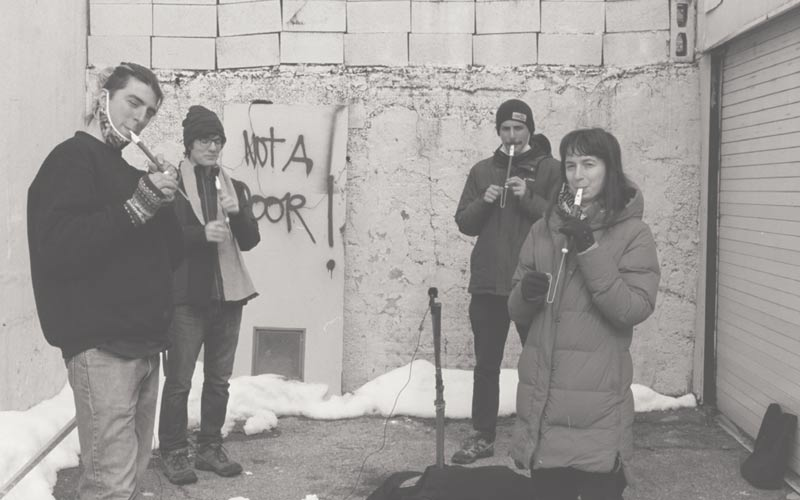
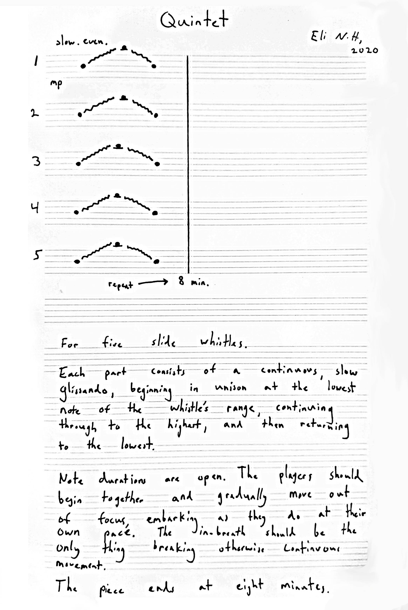
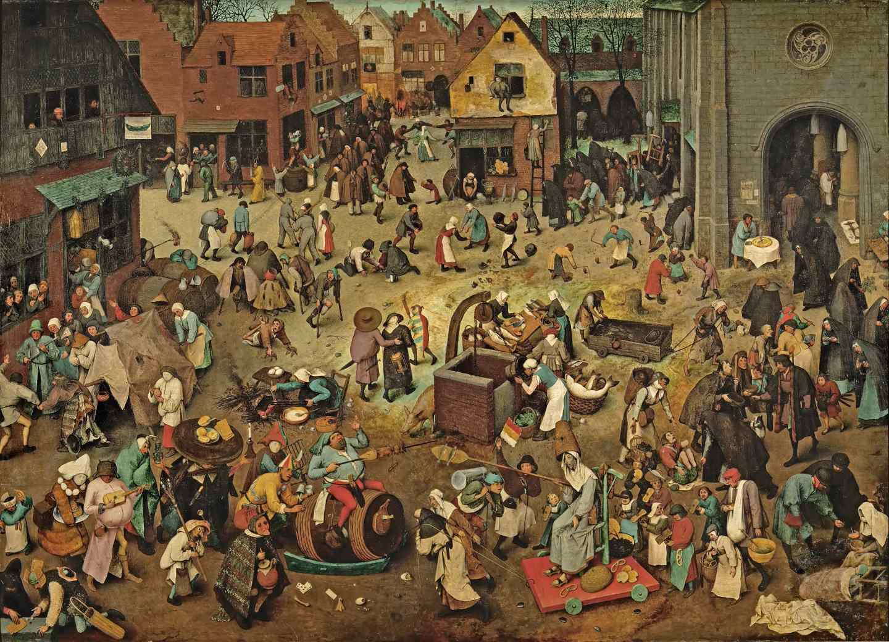
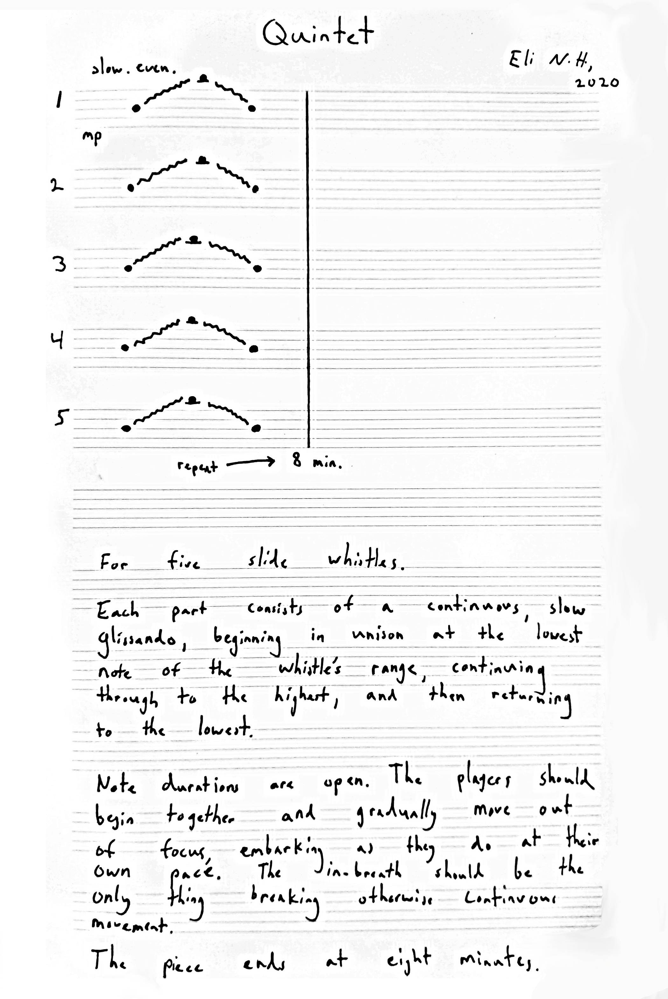
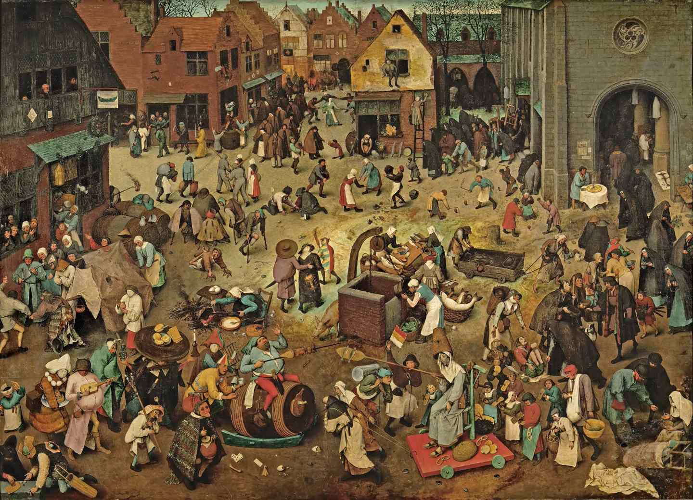

Carnival's Quarrel with Lent
CD released on edition wandelweiser. 2021. Listen.
 




"Carnival's Quarrel with Lent" was written for the slide whistle, a comic instrument that’s easy to play and well-suited for an ironic critique of chamber music. Four sequential pieces are recorded idiosyncratically to reflect different conceptual aims and changing socio-economic conditions.
Tracks:
1 glissando i
2 quintet i
3 quintet ii
4 glissando ii
composer: eli neuman-hammond
players: eli neuman-hammond (slide whistle); ella heron (slide whistle); sophia o’brien-udry (slide whistle); story ponvert (slide whistle); matthew tuggle (slide whistle)
recording, mixing: eli neuman-hammond
mastering: jack callahan
executive producer: antoine beuger
layout: daniel bechem, mess media, berlin
printed by: das druckhaus, korschenbroich